In the standard EKF update, given a linearized measurement error (or residual) equation:
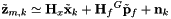
we naively need to compute the residual covariance matrix 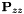 as follows:
![\begin{align*} \mathbf{P}_{zz} &= \mathbb{E}\left[ \tilde{\mathbf{z}}_{m,k}{m,k} \tilde{\mathbf{z}}_{m,k}^\top \right] \\[5px] &= \mathbb{E}\left[ (\mathbf{H}_{x}\tilde{\mathbf{x}}_{k}+\mathbf{H}_{f}{}^G\tilde{\mathbf{p}}_f+\mathbf{n}_k) (\mathbf{H}_{x}\tilde{\mathbf{x}}_{k}+\mathbf{H}_{f}{}^G\tilde{\mathbf{p}}_f+\mathbf{n}_k)^\top \right] \\[5px] &= \mathbb{E}\Big[ \mathbf{H}_{x}\tilde{\mathbf{x}}_{k}\tilde{\mathbf{x}}_{k}^\top\mathbf{H}_{x}^\top +\mathbf{H}_{x}\tilde{\mathbf{x}}_{k}{}^G\tilde{\mathbf{p}}_f^\top\mathbf{H}_{f}^\top +\textcolor{red}{\mathbf{H}_{x}\tilde{\mathbf{x}}_{k}\mathbf{n}_k^\top} \nonumber\\[3px] &\hspace{3cm}+ \mathbf{H}_{f}{}^G\tilde{\mathbf{p}}_f\tilde{\mathbf{x}}_{k}^\top\mathbf{H}_{x}^\top +\mathbf{H}_{f}{}^G\tilde{\mathbf{p}}_f{}^G\tilde{\mathbf{p}}_f^\top\mathbf{H}_{f}^\top +\mathbf{H}_{f}{}^G\tilde{\mathbf{p}}_f\mathbf{n}_k^\top \nonumber\\[3px] &\hspace{3cm}+ \textcolor{red}{\mathbf{n}_k\tilde{\mathbf{x}}_{k}^\top\mathbf{H}_{x}^\top} +\mathbf{n}_k{}^G\tilde{\mathbf{p}}_f^\top\mathbf{H}_{f}^\top +\mathbf{n}_k\mathbf{n}_k^\top \Big] \\[5px] \empty &= \mathbf{H}_x\mathbb{E}\Big[\tilde{\mathbf{x}}_{k}\tilde{\mathbf{x}}_{k}^\top\Big]\mathbf{H}_x^\top +\mathbf{H}_x\mathbb{E}\Big[\tilde{\mathbf{x}}_{k}{}^G\tilde{\mathbf{p}}_f^\top\Big]\mathbf{H}_f^\top +\mathbf{H}_f\mathbb{E}\Big[{}^G\tilde{\mathbf{p}}_f\tilde{\mathbf{x}}_{k}^\top\Big]\mathbf{H}_x^\top + \mathbf{H}_f\mathbb{E}\Big[{}^G\tilde{\mathbf{p}}_f{}^G\tilde{\mathbf{p}}_f^\top\Big]\mathbf{H}_f^\top \nonumber\\[3px] &\hspace{3.2cm}+ \mathbf{H}_f\mathbb{E}\Big[{}^G\tilde{\mathbf{p}}_f\mathbf{n}_k^\top\Big] +\mathbb{E}\Big[\mathbf{n}_k{}^G\tilde{\mathbf{p}}_f^\top\Big]\mathbf{H}_f^\top +\mathbb{E}\Big[\mathbf{n}_k\mathbf{n}_k^\top\Big] \\[5px] \empty &= \mathbf{H}_x \mathbf{P}_{xx}\mathbf{H}_x^\top +\mathbf{H}_x \mathbf{P}_{xf}\mathbf{H}_f^\top +\mathbf{H}_f \mathbf{P}_{fx}\mathbf{H}_x^\top + \mathbf{H}_f \mathbf{P}_{ff}\mathbf{H}_f^\top \nonumber\\[3px] &\hspace{2.3cm}+ \mathbf{H}_f \mathbf{P}_{fn} +\mathbf{P}_{nf} \mathbf{H}_f^\top +\mathbf{R}_d \end{align*}](form_263.png)
However, there would be a big problem in visual-inertial odometry (VIO); that is, we do not know what the prior feature covariance and it is coupled with both the state, itself, and the noise (i.e., , 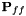, and 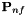). This motivates the need for a method to remove the feature 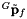 from the linearized measurement equation (thus removing the correlation between the measurement and its error).
To this end, we start with the measurement residual function by removing the "sensitivity" to feature error we compute and apply the left nullspace of the Jacobian 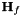. We can compute it using QR decomposition as follows:
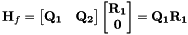
Multiplying the linearized measurement equation by the nullspace of the feature Jacobian from the left yields:
![\begin{align*} \tilde{\mathbf{z}}_{m,k} &\simeq \mathbf{H}_{x} \tilde{\mathbf{x}}_{k} + \mathbf{Q_1}\mathbf{R_1}{}^G\tilde{\mathbf{p}}_f + \mathbf{n}_k \\[5px] \empty \Rightarrow~ \mathbf{Q_2}^\top\tilde{\mathbf{z}}_m &\simeq \mathbf{Q_2}^\top\mathbf{H}_{x} \tilde{\mathbf{x}}_{k} + \textcolor{red}{\mathbf{Q_2}^\top\mathbf{Q_1}\mathbf{R_1} {}^G\tilde{\mathbf{p}}_f} + \mathbf{Q_2}^\top\mathbf{n}_k \\[5px] \empty \Rightarrow~ \mathbf{Q_2}^\top\tilde{\mathbf{z}}_m &\simeq \mathbf{Q_2}^\top\mathbf{H}_{x} \tilde{\mathbf{x}}_{k} + \mathbf{Q_2}^\top\mathbf{n}_k \\[5px] \empty \Rightarrow~ \tilde{\mathbf{z}}_{o,k} &\simeq \mathbf{H}_{o,k}\tilde{\mathbf{x}}_{k} + \mathbf{n}_{o,k} \end{align*}](form_270.png)
where we have employed the fact that  and 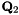 are orthonormal.
and 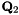 are orthonormal.
We now examine the dimensions of the involved matrices to appreciate the computation saving gained from this nullspace projection.
![\begin{align*} \textrm{size}(\mathbf{H}_{f}) &= 2n\times3 \textrm{~~where~}n\textrm{~is the number of uv measurements of this feature} \\[5px] \textrm{size}({}^G\tilde{\mathbf{p}}_f) &= 3\times1 \\[5px] \textrm{size}(\mathbf{H}_{x}) &= 2n\times15+6c \textrm{~~where~}c\textrm{~is the number of clones} \\[5px] \textrm{size}(\tilde{\mathbf{x}}_{k}) &= 15+6c\times1 \textrm{~~where~}c\textrm{~is the number of clones} \\[5px] \textrm{rank}(\mathbf{H}_{f}) &\leq \textrm{min}(2n,3) = 3 \textrm{~~where equality holds in most cases} \\[5px] \textrm{nullity}(\mathbf{H}_{f}) &= \textrm{size}(\mathbf{x}) - \textrm{rank}(\mathbf{H}_{f}) = 2n-3 \textrm{~~assuming full rank} \end{align*}](form_273.png)
With that, we can have the following conclusion about the sizes when the nullspace is applied:
![\begin{align*} \mathbf{Q_2}^\top\tilde{\mathbf{z}}_{m,k} &\simeq \mathbf{Q_2}^\top\mathbf{H}_{x} \tilde{\mathbf{x}}_{k} + \mathbf{Q_2}^\top\mathbf{n}_k \\[5px] \empty \Rightarrow~ (2n-3\times2n)(2n\times1) &= (2n-3\times2n)(2n\times15+6c)(15+6c\times1) \\ &\hspace{3.5cm}+ (2n-3\times2n)(2n\times1) \nonumber\\[5px] \empty \tilde{\mathbf{z}}_{o,k} &\simeq \mathbf{H}_{o,k}\tilde{\mathbf{x}}_{k} + \mathbf{n}_o \\[5px] \empty \Rightarrow~ (2n-3\times1) &= (2n-3\times15+6c)(15+6c\times1) + (2n-3\times1) \end{align*}](form_274.png)
Finally, we perform the EKF update using the inferred measurement 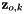:
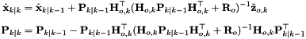
where the time index (subscript) 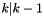 refers to the prior estimate which was denoted before by symbol 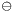 and 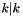 corresponds to the posterior (or updated) estimate indicated before by 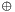.
Implementation
Using Eigen 3 library, we perform QR decomposition to get the nullspace. Here we know that the size of 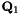 is 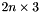, which corresponds to the number of observations and size of the 3D point feature state.